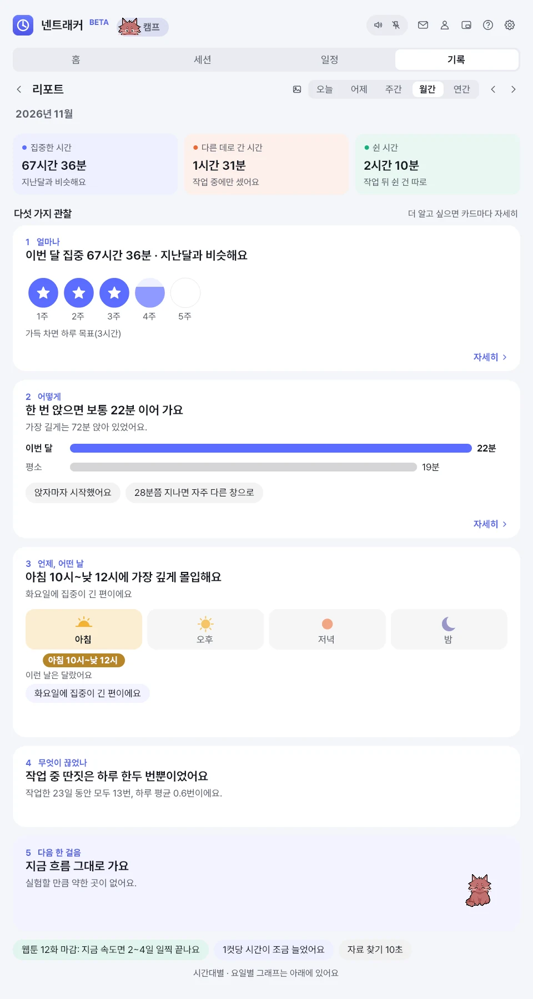
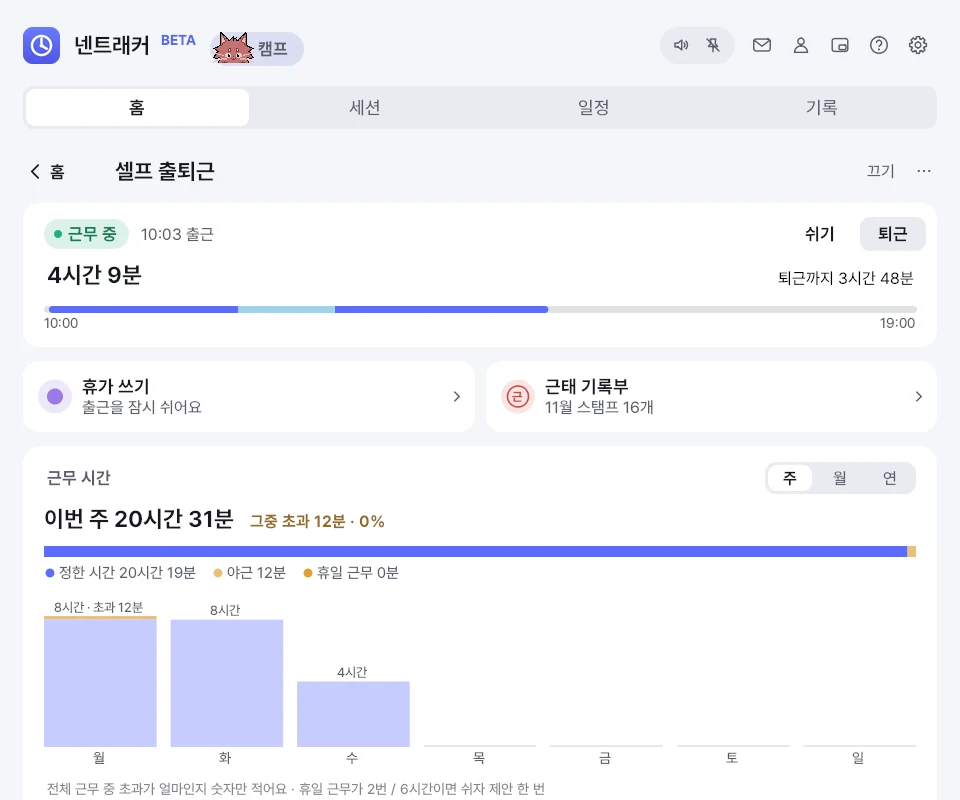
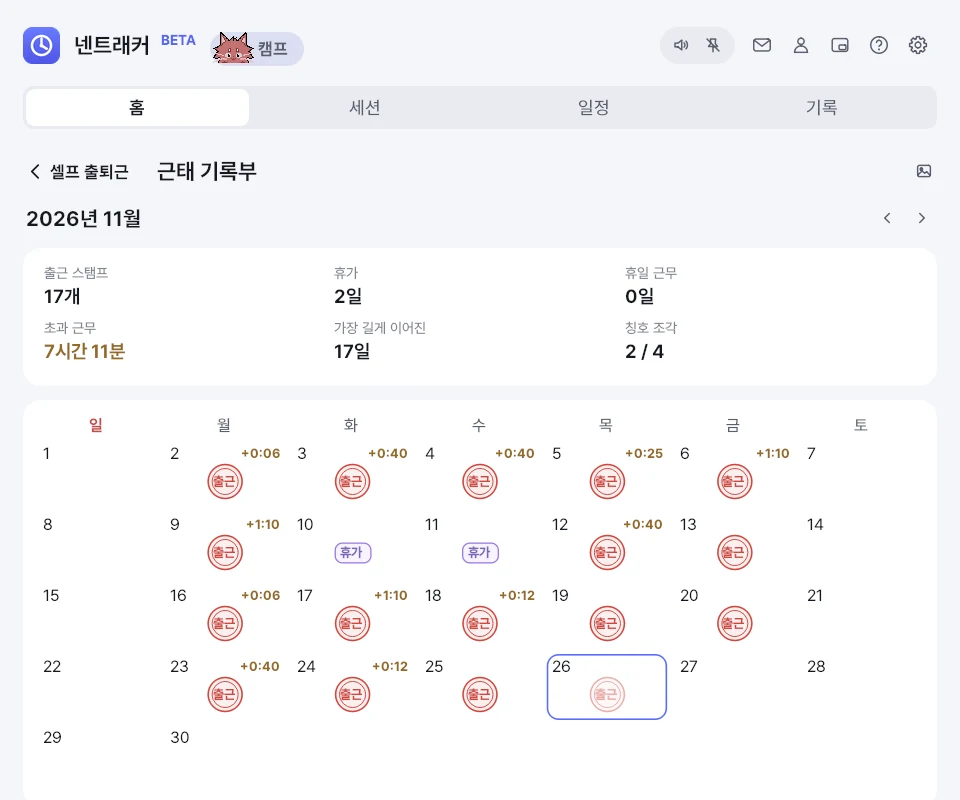
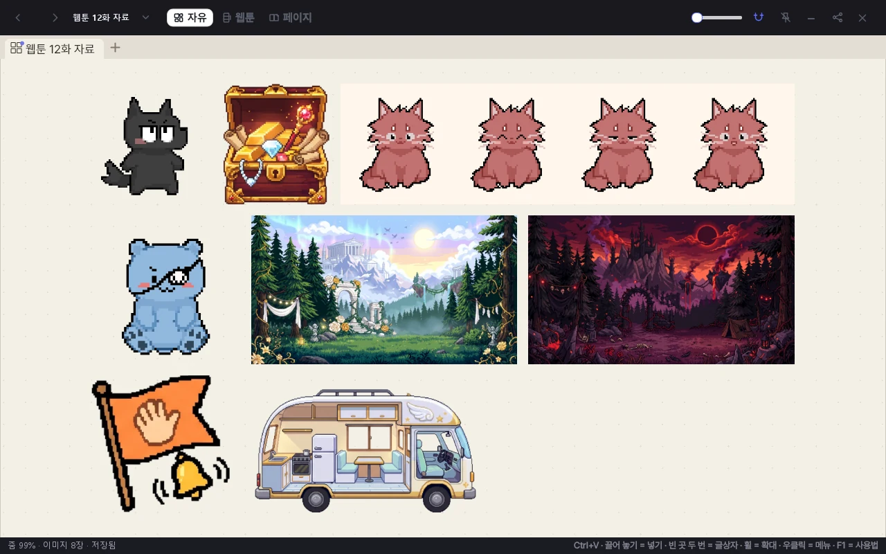
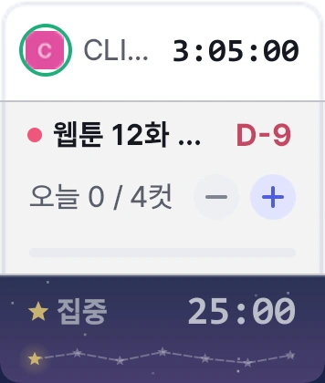
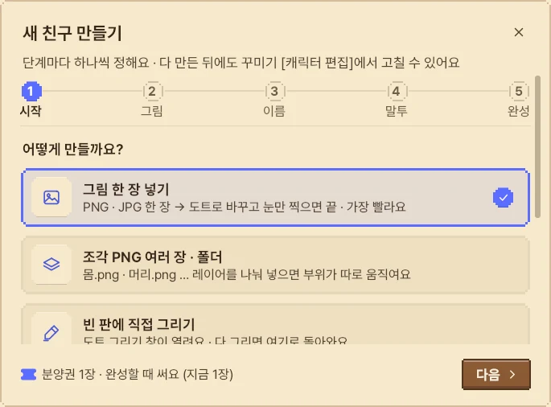
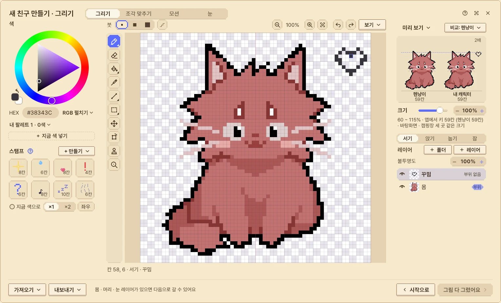

작업한 만큼 모닥불이 자라요
넨트래커는 켜 두기만 하면 작업 시간을 저절로 기록하는 윈도우용 무료 앱이에요. 기록이 쌓일수록 캠핑장 모닥불이 커지고, 헨냥이가 곁에서 응원해요.
무료로 받기켜 두기만 하면 쌓여요
어떤 프로그램과 사이트에서 얼마나 작업했는지 카테고리별로 저절로 모여요. 창 제목은 저장하지 않고, 로그인하지 않으면 기록은 내 컴퓨터에만 있어요.

보상은 작업한 시간에서만
모닥불, 별조각, 친구의 레벨은 모두 실제로 작업한 시간에서만 나와요. 앱이 또 하나의 딴짓거리가 되지 않게요. 오른쪽 모닥불도 읽어 내려온 만큼 자랐어요.
- 8단계작은 불씨부터 전설의 불꽃까지
- 48개집중하면 이어지는 별자리
- 0원앱 안에 결제가 없어요
넨트래커로 할 수 있는 것
아래 칸마다 직접 눌러 볼 수 있는 체험이 들어 있어요.
집중한 시간이 별자리가 돼요
뽀모도로를 시작하면 시간이 흐르는 만큼 별을 이어요. 다 이으면 별자리 하나가 완성돼요. 집중 시간에 맞춰 48개 중 하나가 나와요.
25:00
시작을 누르면 별을 이어요
앱에서는 25분 동안 천천히 이어져요. 여기서는 12초로 빨리 감았어요.
마감까지 하루 몫을 나눠요
마감일과 남은 분량을 넣으면 쉬는 날을 빼고 하루 몫을 나눠요. 하루 밀려도 혼내지 않고, 남은 날에 조용히 다시 나눠요.
- 콘티 · 선화 · 채색 · 마무리처럼 공정을 나눠 어디까지 왔는지 봐요.
- 홈 맨 위 띠에 오늘 할 몫이 늘 떠 있어요.
- 끝내면 결산 창에서 마감에 든 시간을 돌아봐요.
남은 날에 고르게 나눴어요.

리포트가 먼저 알아채요
한 달 기록을 관찰 일지처럼 다섯 장으로 보여 줘요. 잘했다 못했다 판정하지 않고, 다음에 해 볼 한 걸음만 권해요.

혼자 일해도 출근 · 퇴근
프리랜서와 1인 작업자를 위한 셀프 출퇴근이에요. 정한 시각에 출근을 묻고, 쉬는 시간 · 야근 · 휴가까지 근태 기록부에 도장으로 남겨요. 퇴근 뒤 놀이는 딴짓으로 세지 않아요.
출근 도장 찍으러 가자냥
진한 도장 = 출근 · 퇴근 모두 · 옅은 도장 = 쉬는 날
- 출근 의식 오늘 할 일 셋 · 어제 적은 첫 할 일 · 가까운 마감을 보여 주고 시작해요.
- 쉬자 제안 휴일 근무가 쌓이면 쉬는 날을 골라 보자고 먼저 말해요.
- 휴가 휴가 날은 마감 계산에서도 빠지고, 남은 날에 다시 나눠요.
- 근무 광고판 캐릭터 머리 위 작은 판과 이웃 목록에 ‘근무 중’이 떠요.


참고 그림을 띄워 두고 그려요
레퍼런스 보드에 그림을 끌어 놓고, 돌리고 뒤집고 크게 봐요. 작업 창 위에 반투명하게 겹쳐 두거나 단축키 하나로 불러올 수 있어요.

- 돌리고 뒤집기 띄운 그림을 자유롭게 돌리고, 크기를 바꾸고, 위아래로 뒤집어요.
- 투명하게 겹치기 배경을 투명하게 하면 핀 꽂은 그림만 작업 창 위에 떠요.
- 원고 보드 클립 스튜디오 원고를 열어 두면 저장할 때마다 보드에 바로 반영돼요.
- 탭 · 폴더 보드를 탭으로 오가고, 폴더 · 보관함으로 정리해요.
작게 접어 두고 작업해요
미니 화면은 지금 기록 · 뽀모도로 · 마감 진행을 손바닥만 한 창에 모아요. 할 일 · 메모 · 타이머 창을 그 아래에 착 붙여 둘 수 있어요.
- ‘항상 위에’를 켜면 그림 프로그램 위에서도 보여요.
- 붙여 둔 창은 미니 화면을 따라 함께 움직여요.

늘 곁에
있는 친구



바탕화면 창 위에 매달려 말을 걸고, 집중할 땐 조용히 응원해요. 내가 그린 도트 캐릭터도 친구로 데려올 수 있어요.
내 친구를 도트로 그려요
그림 한 장을 넣으면 도트로 바꿔 주고, 빈 판에 직접 그릴 수도 있어요. 숨쉬기 · 걷기 같은 모션과 말투를 정하면 바탕화면과 캠핑장에서 친구가 돼요.
눌러서 말 걸기

기분 따라 옷을 바꿔요
밝음 · 어두움에 여러 색 테마를 입혀요. 테마마다 알림 소리와 축하 효과도 같이 바뀌고, 친구와 레벨을 올리면 그 친구의 전용 테마가 열려요.

이웃 캠핑장에 놀러 가요
구글로 로그인하면 이웃을 만들 수 있어요. 각자 작업하다가 같은 모닥불 곁에 모여요.
- 놀러 가기 이웃 캠핑장에 내 친구를 데리고 가서 손을 흔들고 장작을 보태요.
- 말풍선 채팅 친구 머리 위로 짧게 말을 주고받아요.
- 같이 듣기 DJ를 맡은 이웃의 음악 앱 소리를 같이 들어요.
- 음성 대화 필요할 때만 마이크를 켜서 이야기해요.
- 단체 뽀모도로 같은 타이머로 함께 집중하고 함께 쉬어요.
순위도 비교도 없어요. 곁에 누가 있다는 것만으로 충분하게요.
혼자 만들고 있어요
안녕하세요, 넨트래커를 만드는 헤넨이에요. 작업하는 시간을 기록하고, 그 시간이 조금 덜 외롭게 흘러가도록 만들고 있어요.
모든 보상은 실제로 작업한 시간에서만 나와요. 별조각도, 모닥불도, 친구의 레벨도요. 앱이 딴짓거리가 되면 안 되니까요.
지금 보이는 그림은 임시 그림이에요. 1.0에서 제가 직접 그린 도트로 바뀌고, 그때까지는 BETA로 둘게요.
넨트래커는 AI의 도움을 받아 만들었어요. 버그나 바라는 점은 앱 안 리포트로 알려 주시면 하나씩 고쳐 갈게요.
헤넨 made by henen
자주 묻는 것
정말 무료인가요? 네, 무료예요. 앱 안 상점은 작업해서 모은 별조각으로만 써요.
어떤 컴퓨터에서 쓰나요? 윈도우 10 · 11 (64비트) PC에서 써요. 맥과 휴대폰 판은 아직 없어요.
기록은 어디에 저장되나요? 로그인하지 않으면 모든 기록이 내 컴퓨터에만 있어요. 창 제목은 저장하지 않고, 사이트는 ‘유튜브’ · ‘기타 사이트’처럼 나눈 이름만 남아요.
로그인은 꼭 해야 하나요? 아니요. 이웃 · 놀러 가기 · 기기 연동을 쓸 때만 구글로 로그인해요. 설정 → 계정에서 계정과 서버 데이터를 언제든 지울 수 있어요.
집중할 때 알림이 방해되지 않나요? 뽀모도로 집중 중에는 알림 창을 띄우지 않아요. 친구도 조용히 응원만 해요.
어떤 작업에 맞나요? 그림 · 웹툰 · 글 · 공부 · 개발처럼 컴퓨터로 하는 일이면 다 돼요. 클립 스튜디오 원고를 띄워 두는 레퍼런스 보드처럼 그리는 사람을 위한 기능도 있어요.
설치할 때 경고가 떠요. 개인이 만든 앱이라 Windows가 ‘알 수 없는 게시자’라고 알릴 수 있어요. [추가 정보] → [실행]을 누르면 설치돼요.
업데이트는 어떻게 받나요? 켤 때와 몇 시간마다 새 버전을 확인해요. 알림의 ‘업데이트’를 누르면 받아서 설치해요.
BETA는 무슨 뜻인가요? 아직 만들어 가는 중이라는 뜻이에요. 그림은 1.0에서 새로 그린 도트로 바뀌어요.
버그는 어디에 알리나요? 앱 안 ‘버그 리포트 · 문의’로 보내 주세요. 로그인하면 보낼 수 있어요.